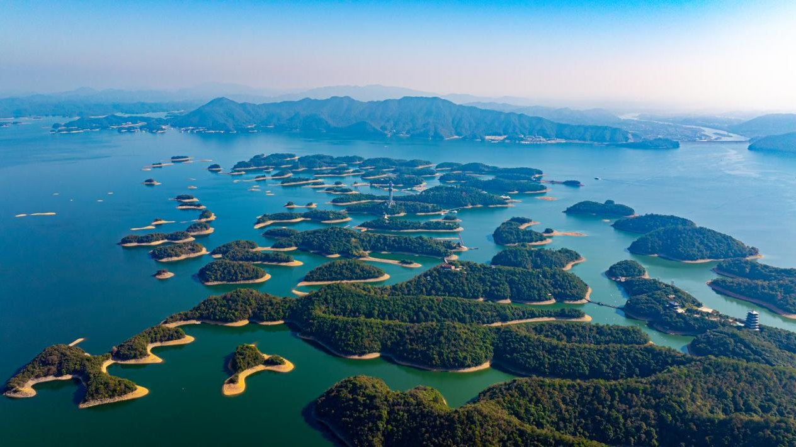

庐山西海风景区位于九江市永修县，是上世纪五、六十年代截流筑坝、蓄水成湖，形成如今碧波万顷、千岛若珠的美丽景象。庐山西海风景区包括西海湖区和云居山景区，是一处集国家级旅游景区、国家水利风景区、国家森林公园、亚洲最大土坝水库为一体的山岳湖泊型特大景区。湖区总容量80亿立方米，平均水深45米，能见度达11米，拥有国家一级水质、一级空气，是“水中大熊猫”桃花水母的全国最大繁衍地。

九月初，我们夫妻与弟弟夫妻一同结束庐山旅游转来此地游湖，一览300余平方公里水面、8000多大小岛屿的大美风光。说是庐山西海风景区，但从庐山南门过来还有80多公里，感觉不出二者之间有啥关系。
事先做了功课，乘船登岛游西海有两个码头可选：司马码头、梦生山码头，上、下船必须在同一码头。因为梦生山码头傍晚能赏落日，所以我们选择从这里乘船上岛。另外游船分A线和B线。A线是先游9个小岛，游毕可以直接返航，也可再接下去游渔村群岛，之后返航。B线与A线相同，只是游玩顺序相反。小岛太多，加上当日天气极热，全部小岛走下来不现实，所以我们直接放弃渔村群岛，选择A线路，9个小岛游完就返程。
我们的汽车停在游客中心，从这里乘观光车前往梦生山码头。
下车后，司机再三提醒：回程一定要记得坐开往梦生山码头的游船，否则下错码头再回来很麻烦
游船停靠第一个小岛云居岛。要上岛先过桥，这座桥叫明月桥。过桥后分左、右两条路，两边风景各有不同，但殊途同归。因为事先知道左边有白沙滩、椰子树，且大客流基本都是走右边，所以我们走人少景美的左边。